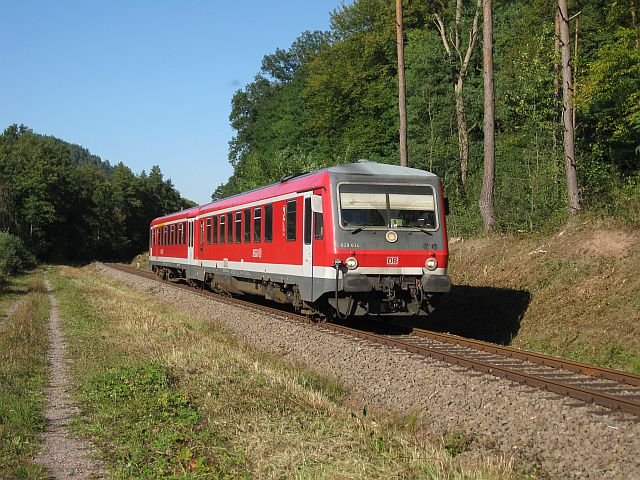

Die Strecke
Durch das Dahner Felsenland
Die Wieslauterbahn verbindet auf rund 20 Kilometern die Bahnhöfe Hinterweidenthal Ost, Dahn Süd und Bundenthal-Riedalben. Die Strecke schlängelt sich durch dichten Mischwald und vorbei an den markanten Sandsteinfelsen der Südwestpfalz – eine der landschaftlich reizvollsten Nebenbahnstrecken Deutschlands.
Streckenverlauf
-
Hinterweidenthal Ost
Umsteigebahnhof – Anschluss an die DB-Regio-Linie Landau–Pirmasens.
-
Erfweiler
Haltepunkt, Ausgangspunkt für Wanderungen zu den Erfweiler Felsen.
-
Dahn Süd
Bahnhof mit Empfangsgebäude, direkt unterhalb der Dahner Burgengruppe.
-
Bruchweiler-Bärenbrunn
Haltepunkt am Ortsrand, beliebter Einstieg für Radfahrer.
-
Bundenthal-Riedalben
Endbahnhof – aktuell wegen Sanierungsarbeiten mit Schienenersatzverkehr angebunden.
Die Landschaft der Südwestpfalz
Das Dahner Felsenland zählt zu den waldreichsten Regionen Deutschlands und ist Teil des Naturparks Pfälzerwald-Nordvogesen (UNESCO-Biosphärenreservat). Die charakteristischen Buntsandsteinfelsen, Burgruinen und dichten Wälder machen die Zugfahrt selbst zu einem Landschaftserlebnis.